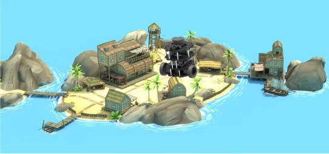

Treasure Hunt
A project created for the final assignment of EECS C206: Introduction to Robotics course at UC Berkeley.
Overview
In this project we combine different components of robotics: sensing, planning, and navigation. The goal is to teach a turtlebot to find an object inside an environment. The environment and the location of the object to find will be unknown to the turtlebot. The locations of the obstacles will also vary every time we command the turtlebot to find the object. The turtlebot should be able to navigate the environment and avoid obstacles to find the object of interest. Once the turtle has found the object, it will stop and send a message indicating it has completed the task.
Introduction
Project Goal:
Get the Turtlebot to find an object in an unknown environment. The Turtlebot should explore the environment and avoid obstacles to find the object of interest. Once the turtle has found the object, it will stop and send a message indicating it has completed the task.
Why is it interesting?
- Integrates different components of robotics: sensing, planning, and control
- Software-to-hardware integration
- Autonomy
- Use of-the-shelf open source components
What interesting problems did we need solve to make our solution work?
- ROS Architecture and integration
- Customizing existing packages, Debugging
- Autonomy and collision avoidance
- Robust computer vision
- Exploration of unknown environment
Real-world robotics applications
- Search and rescue applications
- Surveillance
- Robotic service applications: hospitals use assist robots get hospital supplies, hospital servicing, etc.
Design Requirements
- Detection Capability:
- Ability to detect objects at a min distance of 2 feet.
- Autonomous Navigation and Exploration:
- Navigate independently through the environment.
- Systematically map the unknown area during exploration.
- Object Detection:
- Upon detecting the object of interest, cease exploration and navigate towards the object.
- If the object is not found after a complete exploration, activate a signal to indicate its absence.
- Obstacle Management:
- Efficiently navigate around obstacles, avoiding collisions with objects or walls.
Design Choices & Formulation
(move_base, SLAM)
(contour + hue analysis)
(moveBaseAction)
(SLAM, OccupancyGrid, visualization of frontiers)
Design - Trade-Offs
- Simplification of Environment: Implemented walls and boundaries for a controlled setting.
- Computer Vision (CV) Detection Trade-offs: Balancing the scale - Lowering false positives may increase false negatives, and vice versa.
- Functionality vs. Collision Parameters Testing: Assessing the project's performance while monitoring collision dynamics.
- Managing Environment Complexity: Navigating through the complexities of the environment for optimal results.
Implementation
Hardware:
Turtlebot3:
- 2 main drive wheels DYNAMIXEL
- IMU (Gyroscope 3 axis, Accelerometer 3-axis)
- Power connectors and peripherals
- Single-board computer (Raspberry Pi running Linux, ROS Noetic, and OpenCR)
- Battery (Lithium polymer 11.1V 1800mAh / 19.98Wh
- Intel RealSense 3D Camera with integrated IMUs and SLAM
- Boxes
- Styrofoam
- Recycled wood from the Lab
- Objects in the lab
Software Architecture:
ROS Packages in the project:
- turtlebot3_slam: To localize and build a map of the environment. This packages uses the ROS node "slam_gmapping" to create a 2D occupancy grid map using laser-based SLAM in simulation.
- turtlebot3_simulations: This node will be executed using any of the executable scripts. It will bring up and deploy the turtlebot3 model when running on simulation mode.
- turtlebot3_navigation: This package is used to navigate through the environment given a map of the world. The node communicates with the ROS Navigation stack and sends goals for the robot to reach. The ROS navigation stack uses Dijkstra's algorithm to find a path for the robot to reach goals while avoiding obstacle.
- explore_lite: This package is used to autonomously explore an unknown environment using greedy frontier-based exploration algorithm. Note we created a modified version of this package.
- Perception: algorithm to detect a specific predefined object and calculates it’s position in global frame
Perception and Planning Algorithms
Perception:
- Image Processing: Images are enhanced for better analysis, converted to HSV.
- Object Detection: Specific objects are identified using algorithms that detect and isolate objects based on color thresholds.
- Contour Analysis: The contours of detected objects are analyzed for shape and size. For example, identifying a basketball by its circular contour.
- Utilized turtlebot3_slam for dynamic 3D mapping and precision localization, integrating LIDAR and visual data..
- Enhanced turtlebot3_navigation with CV-driven pathfinding and adaptive exploration algorithms in explore_lite for efficient, real-time navigation in complex environments.
Results
Videos
Limitations, Difficulties and Future Scope
Current Testing Status:
- Environment Testing: Successfully only tested in small, controlled environments. However, simulations in larger environments show promising results.
- Computer Vision Robustness: Current CV system shows limited robustness in varying light conditions.
- Collision Detection Dependency: Relies on 'min_frontier_size' parameter within the SLAM package for effectiveness.
- Enhanced CV under Varying Lighting: Investigate and implement solutions to make computer vision robust against changes in lighting conditions.
- Backtracking and Retrieval Mechanisms: Develop backtracking steps to improve retrieval efficiency and accuracy in complex environments.
Conclusion
- Commands a Turtlebot3 model Burger to explore an environment and search for a predefined object using computer vision (CV).
- The exploration module is relatively robust and works in simple and more complex scenarios.
Additional Material
You can find our well-documented code on GitHub with the following information:
- Instructions for installation, building, and running the package.
- Dockerfile to run in other Operating Systems Scripts to automatically set up and launch multiple ROS packages Source code.
Check our Code 👇🏽
The team
Gaby Mendoza
Maria (Gaby) Mendoza is a first-year Mechanical Engineering PhD student interested in mechanisms for cooperation and coordination of multi-agent systems including Multi-Agent Reinforcement Learning (MARL).
Mark Pustilnik.
ME PhD Student.
Vardhan.
EECS Student.
Rohan.
EECS Student.